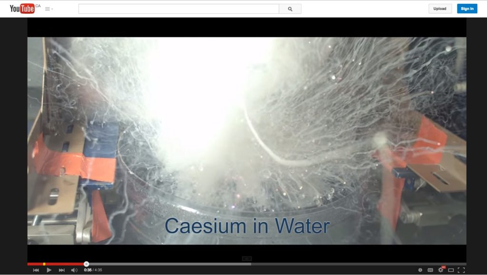

8.1 Refletindo sobre as diferenças pedagógicas das mídias


Imagem: Vertendo mercúrio em nitrogênio líquido: Universidade de Nottingham
Clique na imagem para ver o vídeo

8.1.1 Identificando as diferenças pedagógicas entre as mídias
No capítulo anterior, identifiquei três dimensões fundamentais de mídias e de tecnologias ao longo das quais qualquer tecnologia pode ser situada. Nos próximos dois capítulos, discutirei um método para decidir quais mídias utilizar no ensino. Neste capítulo, focar-me-ei principalmente nas diferenças pedagógicas entre as mídias. No capítulo seguinte, apresentarei um modelo ou conjunto de critérios a utilizar na tomada de decisões sobre mídias e tecnologias para o ensino.
8.1.2 Primeiros passos
Qualquer decisão sobre a utilização da tecnologia na educação e no treinamento trará consigo pressupostos sobre o processo de aprendizagem. Já vimos anteriormente neste livro de que forma diferentes posições epistemológicas e teorias de aprendizagem afetam o planejamento do ensino, e estas influências determinarão também a escolha das mídias adequadas por parte do professor. Assim, o primeiro passo consiste em decidir o que e como se pretende ensinar.
Este tema foi abordado detalhadamente nos Capítulos 2 a 5, mas, em síntese, existem cinco questões críticas que necessitam de ser colocadas sobre o ensino e a aprendizagem a fim de selecionar e utilizar as mídias/tecnologias adequadas:
- qual é a minha posição epistemológica subjacente sobre o conhecimento e o ensino?
- quais são os resultados de aprendizagem pretendidos com o ensino?
- quais métodos de ensino serão aplicados para facilitar os resultados de aprendizagem?
- quais são as características educacionais únicas de cada mídia/tecnologia e em que medida se adequam aos requisitos de aprendizagem e de ensino?
- quais recursos encontram-se disponíveis?
Este capítulo foca na quarta destas questões, mas é preferível não as colocar de forma sequencial, mas sim de modo cíclico ou interativo, uma vez que as affordances das mídias podem sugerir métodos de ensino alternativos ou mesmo a possibilidade de resultados de aprendizagem que não tinham sido inicialmente considerados. Quando se analisam as características pedagógicas únicas das diferentes mídias, isso pode levar a algumas alterações nos conteúdos a abordar e nas competências a desenvolver. Por conseguinte, nesta fase, as decisões sobre conteúdos e resultados de aprendizagem devem manter-se provisórias.
8.1.3 Identificando as características educacionais únicas de uma mídia
Diferentes mídias apresentam potenciais ou "affordances" distintos para diferentes tipos de aprendizagem. Uma das artes de ensinar reside frequentemente em encontrar a melhor correspondência entre as mídias e os resultados de aprendizagem pretendidos. Antes de explorar esta relação, apresenta-se um resumo do volume substancial de excelente investigação realizada no passado sobre este tema (ver, por exemplo, Trenaman, 1967; Olson e Bruner, 1974; Schramm, 1977; Salomon, 1979, 1981; Clark, 1983; Bates, 1984; Koumi, 2006; Berk, 2009; Mayer, 2009).
Esta pesquisa indicou que existem três elementos fundamentais que necessitam de ser considerados ao decidir quais mídias utilizar:
- o conteúdo;
- a estrutura do conteúdo;
- as competências.
Olson e Bruner (1974) sustentam que a aprendizagem envolve dois aspectos distintos: a aquisição de conhecimentos sobre fatos, princípios, ideias, conceitos, acontecimentos, relações, regras e leis; e a utilização ou o trabalho sobre esse conhecimento para desenvolver competências. Mais uma vez, este processo não é necessariamente sequencial. Identificar competências e, a partir daí, retroceder para identificar os conceitos e princípios necessários para apoiar essas competências pode constituir outra forma válida de trabalhar. Na realidade, a aprendizagem de conteúdos e o desenvolvimento de competências surgirão frequentemente integrados em qualquer processo de aprendizagem. No entanto, no momento de decidir sobre a utilização de mídias, revela-se útil efetuar a distinção entre conteúdo e competências.
8.1.3.1 A representação do conteúdo
As mídias diferem na medida em que conseguem representar diferentes tipos de conteúdos, pois variam nos sistemas de símbolos (texto, som, imagens estáticas, imagens em movimento, etc.) que utilizam para codificar a informação (Salomon, 1979). Vimos no capítulo anterior que diferentes mídias são capazes de combinar sistemas de símbolos distintos. As diferenças entre as mídias na forma como combinam os sistemas de símbolos influenciam o modo como representam os conteúdos. Assim, verifica-se uma diferença entre uma experiência direta, uma descrição escrita, uma gravação televisiva e uma simulação informática do mesmo experimento científico. Utilizam-se sistemas de símbolos diferentes, transmitindo tipos distintos de informação sobre a mesma experiência. Por exemplo, o nosso conceito de calor pode derivar do tato, de símbolos matemáticos (800 graus Celsius), de palavras (movimento aleatório das partículas), de animações ou da observação de experimentos. O nosso "conhecimento" sobre o calor, em consequência disso, não é estático, mas sim evolutivo. Uma grande parte da aprendizagem exige a integração mental de conteúdos adquiridos através de diferentes mídias e sistemas de símbolos. Por esta razão, a compreensão mais profunda de um conceito ou de uma ideia resulta frequentemente da integração de conteúdos derivados de uma variedade de fontes de mídias (Mayer, 2009).
As mídias diferem também na sua capacidade de lidar com conhecimentos concretos ou abstratos. O conhecimento abstrato é tratado prioritariamente através da linguagem. Embora todas as mídias possam processar a linguagem, seja na forma escrita ou falada, estas variam na sua capacidade de representar o conhecimento concreto. Por exemplo, a televisão consegue exibir exemplos concretos de conceitos abstratos, mostrando o "acontecimento" concreto no vídeo, enquanto a faixa de áudio analisa o evento em termos abstratos. Mídias bem planejadas podem ajudar os aprendizes a transitar do concreto para o abstrato e vice-versa, conduzindo, mais uma vez, a uma compreensão mais profunda.
8.1.3.2 Estrutura do conteúdo
As mídias diferem também na forma como estruturam os conteúdos. Os livros, o telefone, o rádio, os podcasts e o ensino presencial tendem a apresentar os conteúdos de forma linear ou sequencial. Embora estas mídias consigam representar atividades paralelas (por exemplo, no material impresso, diferentes capítulos podem tratar de acontecimentos que ocorrem simultaneamente mas sob perspectivas distintas), estas atividades continuam a ter de ser apresentadas sequencialmente. Os computadores e a televisão revelam-se mais capazes de apresentar ou simular a inter-relação de múltiplas variáveis que ocorrem simultaneamente. A realidade virtual constitui um exemplo excepcionalmente poderoso desta capacidade. Os computadores conseguem também processar ramificações ou rotas alternativas através da informação, mas habitualmente dentro de limites estritamente definidos.
A matéria de ensino varia bastante na forma como a informação necessita de ser estruturada. As áreas disciplinares (por exemplo, as ciências naturais, a história) estruturam os conteúdos de formas específicas determinadas pela lógica interna da própria disciplina. Esta estrutura pode apresentar-se muito rígida ou lógica, exigindo sequências ou relações específicas entre diferentes conceitos, ou muito aberta ou flexível, exigindo que os aprendizes lidem com matérias altamente complexas de forma aberta ou intuitiva.
Se as mídias variam tanto na forma como apresentam a informação simbolicamente como no modo como tratam as estruturas exigidas em diferentes áreas temáticas, torna-se necessário selecionar as mídias que melhor se adequam ao modo de apresentação pretendido e à estrutura dominante da matéria. Consequentemente, diferentes áreas disciplinares exigirão um equilíbrio de mídias distinto. Isto implica que os especialistas das matérias devem estar profundamente envolvidos nas decisões sobre a escolha e a utilização de mídias, a fim de garantir que as mídias selecionadas se adaptem adequadamente aos requisitos de apresentação e de estruturação da matéria.
8.1.3.3 O desenvolvimento de competências
As mídias diferem também na medida em que conseguem ajudar a desenvolver competências distintas. As competências podem variar desde as intelectuais até às psicomotoras e afetivas (emoções, sentimentos). Koumi (2015) utilizou a revisão efetuada por Krathwohl (2002) sobre a Taxonomia de Objetivos de Aprendizagem de Bloom (1956) para associar as affordances do texto e do vídeo a objetivos de aprendizagem, recorrendo à classificação de objetivos de Krathwohl.
A compreensão constitui provavelmente o nível mínimo de resultado de aprendizagem intelectual para a maioria dos cursos de formação. Alguns investigadores (por exemplo, Marton e Säljö, 1976) distinguem entre a compreensão superficial e a profunda. No nível mais elevado de competências situa-se a aplicação daquilo que se compreendeu a novas situações. Neste patamar, torna-se necessário desenvolver competências de análise, de avaliação e de resolução de problemas.
Assim, o primeiro passo consiste em identificar os objetivos ou resultados de aprendizagem, tanto em termos de conteúdos como de competências, estando consciente de que a utilização de algumas mídias pode abrir novas possibilidades em termos de resultados de aprendizagem.
8.1.4 Affordances pedagógicas — ou características únicas das mídias?
"Affordances" (possibilidades) constitui um termo desenvolvido originalmente pelo psicólogo James Gibson (1977) para descrever as possibilidades percebidas de um objeto em relação ao seu ambiente (por exemplo, uma maçaneta sugere ao utilizador que deve ser girada ou puxada, ao passo que uma placa plana numa porta sugere que deve ser empurrada). O termo foi apropriado por várias áreas, incluindo o design instrucional e a interação homem-máquina.
Assim, as affordances pedagógicas de uma mídia referem-se às possibilidades de utilizar essa mídia para fins de ensino específicos. Cumpre notar que uma affordance depende da interpretação subjetiva do utilizador (neste caso, o professor ou instrutor), sendo frequentemente possível utilizar uma mídia de formas que não lhe são exclusivas. Por exemplo, o vídeo pode ser utilizado para registrar e transmitir uma aula expositiva. Nesse sentido, verifica-se uma semelhança em pelo menos uma affordance para uma aula expositiva presencial e um vídeo. Além disso, os estudantes podem optar por não utilizar a mídia da forma pretendida pelo professor. Por exemplo, Bates e Gallagher (1977) constataram que alguns estudantes de ciências sociais se opunham a programas de televisão em formato de documentário que exigiam a aplicação de conhecimentos ou análise, em vez da apresentação direta de conceitos.
Outros (como eu) têm utilizado o termo "características únicas" de uma mídia em vez de affordances, uma vez que as "características únicas" sugerem que existem utilizações específicas de uma mídia que são mais difíceis de replicar por outras mídias e que, por conseguinte, funcionam como um melhor fator de discriminação no momento de selecionar e utilizar as mídias. Por exemplo, a utilização do vídeo para demonstrar em câmera lenta um processo mecânico revela-se muito mais difícil (embora não impossível) de replicar noutras mídias. No que se segue, o meu foco incidirá mais nas affordances únicas ou particulares do que nas gerais de cada mídia, embora a natureza subjetiva e flexível da interpretação das mídias torne difícil chegar a conclusões rígidas.
Procurarei agora, nas seções seguintes, identificar algumas das características pedagógicas únicas das seguintes mídias:
- texto;
- áudio;
- vídeo;
- computação;
- mídias sociais;
- tecnologias emergentes, em particular a realidade virtual/aumentada, os jogos sérios e a inteligência artificial.
Tecnicamente, o ensino presencial também deveria ser considerado uma mídia, mas analisarei especificamente as características únicas do ensino presencial no Capítulo 10, onde discutirei as diferentes modalidades de ensino.
8.1.5 Objetivo do exercício
Antes de iniciar a análise das diferentes mídias, é importante compreender os meus objetivos neste capítulo. NÃO procuro apresentar uma lista definitiva das características pedagógicas únicas de cada mídia. Uma vez que o contexto se revela tão relevante e que a ciência não é suficientemente forte para identificar de forma inequívoca essas características, sugiro nas seções seguintes uma forma de pensar sobre as affordances pedagógicas das diferentes mídias. Para o fazer, identificarei o que considero as características pedagógicas mais importantes de cada mídia.
No entanto, os leitores individuais poderão perfeitamente chegar a conclusões diferentes, dependendo particularmente da área disciplinar em que trabalham. O ponto importante consiste em que os professores reflitam sobre o que cada mídia poderia contribuir pedagogicamente na sua área disciplinar, o que exige uma sólida compreensão tanto das necessidades dos seus estudantes como da natureza da sua matéria, bem como das características pedagógicas essenciais de cada mídia.
Ouça o podcast abaixo para uma ilustração das diferenças entre as mídias.
Podcast 8.1 Tony's shaggy dog story: clique em reproduzir no podcast acima (41 segundos).
Um elemento de áudio foi excluído desta versão do texto. Você pode ouvi-lo on-line aqui: https://pressbooks.bccampus.ca/teachinginadigitalagev2/?p=197
Referências
Bates, A. (1984) Broadcasting in Education: An Evaluation London: Constables
Bates, A. and Gallagher, M. (1977) Improving the Effectiveness of Open University Television Case-Studies and Documentaries Milton Keynes: The Open University, I.E.T. Papers on Broadcasting, No. 77 (esgotado – cópias disponíveis através do e-mail tony.bates@ubc.ca)
Berk, R.A. (2009) Multimedia teaching with video clips: TV, movies, YouTube and mtvU in the college classroom, International Journal of Technology in Teaching and Learning, Vol. 91, No. 5
Bloom, B. S.; Engelhart, M. D.; Furst, E. J.; Hill, W. H.; Krathwohl, D. R. (1956). Taxonomy of educational objectives: The classification of educational goals. Handbook I: Cognitive domain. New York: David McKay Company
Clark, R. (1983) Reconsidering research on learning from media Review of Educational Research, Vol. 53. No. 4
Gibson, J.J. (1979) The Ecological Approach to Visual Perception Boston: Houghton Mifflin
Koumi, J. (2006) Designing video and multimedia for open and flexible learning. London: Routledge.
Koumi, J. (2015) Learning outcomes afforded by self-assessed, segmented video-print combinations Cogent Education, Vol. 2, No.1
Krathwohl, D.R. (2002) A Revision of Bloom’s Taxonomy: An Overview in Theory into Practice, Vol. 41, No. 4, College of Education, The Ohio State University.
Marton, F. and Säljö, R. (1997) Approaches to learning, in Marton, F., Hounsell, D. and Entwistle, N. (eds.) The experience of learning: Edinburgh: Scottish Academic Press
Mayer, R. E. (2009) Multimedia learning (2nd ed). New York: Cambridge University Press
Olson, D. and Bruner, J. (1974) ‘Learning through experience and learning through media’, in Olson, D. (ed.) Media and Symbols: the Forms of Expression Chicago: University of Chicago Press (esgotado)
Salomon, G. (1979) Interaction of Media, Cognition and Learning San Francisco: Jossey-Bass
Salomon, G. (1981) Communication and Education Beverly Hills CA/London: Sage (esgotado)
Schramm, W. (1977) Big Media, Little Media Beverly Hills CA/London: Sage
Trenaman, J. (1967) Communication and Comprehension London: Longmans
Atividade 8.1 Refletindo sobre as diferenças pedagógicas entre as mídias
- Analise uma das suas aulas ou disciplinas.
- Você consegue pensar em conteúdos que seriam mais bem apresentados através de vídeo ou de áudio em vez da fala ou de texto? Que conteúdo continua a ser melhor oferecido através da fala ou de um livro didático? Quais as suas razões? São razões pedagógicas ou de outra natureza?
- Consegue pensar em alguma competência que ensina que poderia ser melhor desenvolvida através da utilização de mídias que não está a utilizar atualmente?
- Consegue idealizar novos resultados de aprendizagem que poderia alcançar através da utilização de mídias?
Não apresento feedback para esta atividade, mas o restante deste capítulo e o capítulo seguinte poderão ajudar.